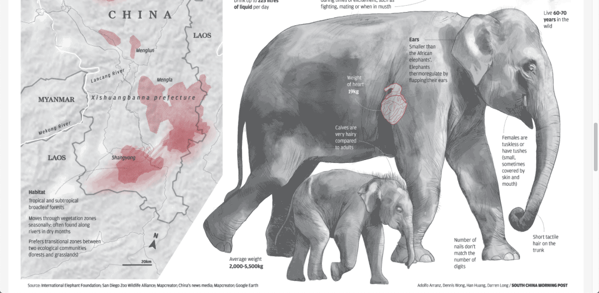
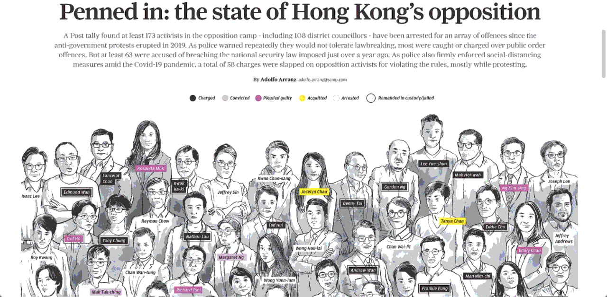
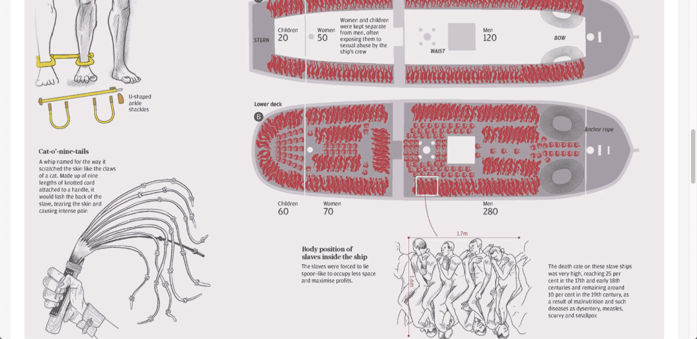
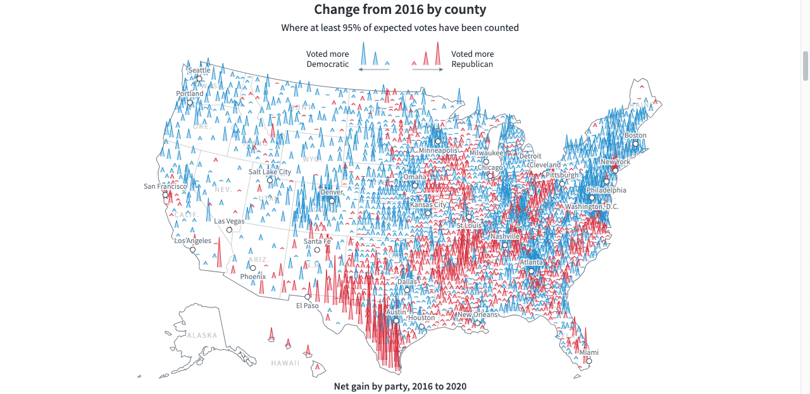
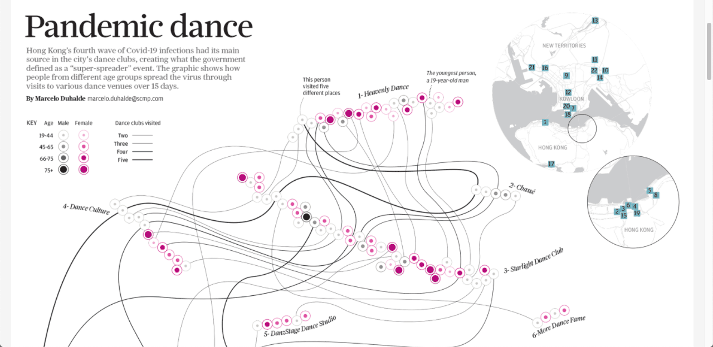
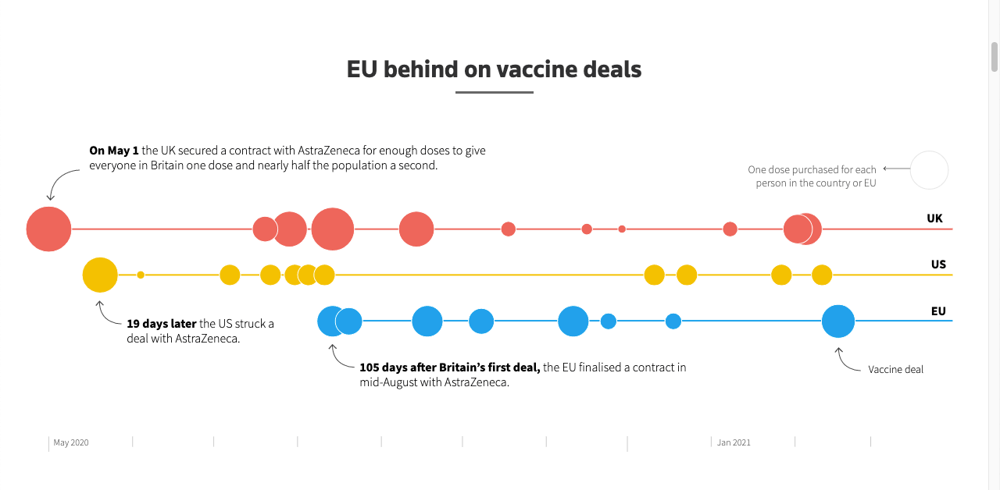
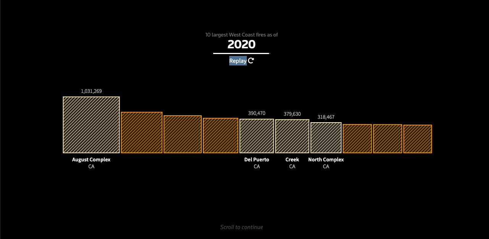
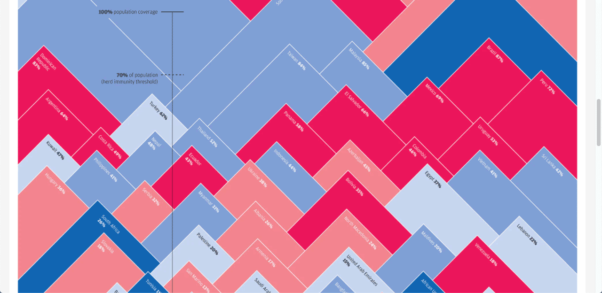

Información en gráficos figurativos

On The Move
Publicado en South China Morning Post.

Penned in: the state of Hong Kong’s opposition
Publicado en South China Morning Post.

The Slave Trade
Publicado en South China Morning Post.

How Joe Biden won the U.S. presidential election
Publicado en Reuters Graphics.
Información en gráficos no figurativos

Pandemic dance
Publicado en South China Morning Post.

Europe’s vaccine hesitancy
Publicado en Reuters Graphics.

The age of the “megafire”
Publicado en Reuters Graphics.

Calling the shots
Publicado en South China Morning Post.